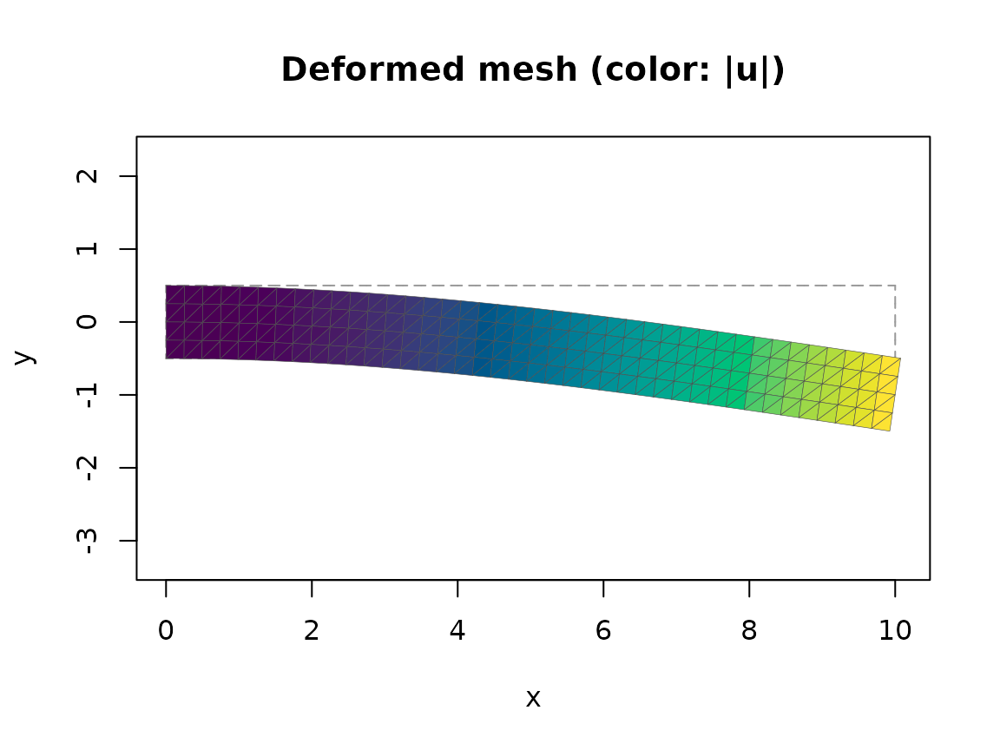

The model
Small-strain linear elasticity seeks a displacement field u = (u_x, u_y) with
-\nabla\cdot\sigma(u) = f, \qquad \sigma(u) = \lambda\,(\nabla\cdot u)\,I + 2\mu\,\varepsilon(u), \qquad \varepsilon(u) = \tfrac12(\nabla u + \nabla u^\top),
prescribed displacements on \Gamma_D and prescribed tractions \sigma(u)n = g on \Gamma_N. Edges without a condition are traction free. The weak form is
\int_\Omega \sigma(u):\varepsilon(v)\,dx = \int_\Omega f\cdot v\,dx + \int_{\Gamma_N} g\cdot v\,ds .
The Lamé parameters come from Young’s modulus E and Poisson’s ratio \nu: \mu = E/(2(1+\nu)), and \lambda = E\nu/((1+\nu)(1-2\nu)) in plane strain or \lambda = E\nu/(1-\nu^2) in plane stress.
Vector-valued spaces
The displacement lives in a vector-valued Lagrange space: each component is a scalar P1 or P2 function, and the unknowns are ordered with all x components first. For basis functions \phi_j e_a (trial) and \phi_i e_b (test) the element matrix is
\int_T \lambda\,\partial_a\phi_j\,\partial_b\phi_i + \mu\left(\delta_{ab}\,\nabla\phi_j\cdot\nabla\phi_i + \partial_b\phi_j\,\partial_a\phi_i\right) dx,
assembled with the same vectorized tensor kernel as anisotropic diffusion. The global matrix is symmetric, and positive definite once the displacement conditions remove the three rigid motions.
A cantilever beam
A beam of length 10 and height 1 is clamped on the left and loaded by a downward traction on the right end:
mesh <- pde_mesh_rectangle(c(0, 10), c(-0.5, 0.5), nx = 40, ny = 4)
beam <- function(degree) {
elasticity_problem(mesh, E = 1000, nu = 0.3, plane = "stress", degree = degree,
bcs = list(displacement_bc(c(0, 0), "left"),
traction_bc(c(0, -1), "right")))
}
s2 <- solve_pde(beam(2))
s2
#> <pde_vector_solution> P2 displacement, 1458 dofs (1440 free); solver cholesky (solved), relative residual 1.12e-10
#> max |u| = 4.033
plot(s2)
Timoshenko beam theory predicts the tip deflection PL^3/(3EI) + PL/(\kappa GA) with I = 1/12, G = E/(2(1+\nu)) and \kappa = 5/6:
theory <- 10^3 / (3 * 1000 / 12) + 10 / (5 / 6 * 1000 / 2.6)
s1 <- solve_pde(beam(1))
c(theory = theory, P1 = -evaluate(s1$uy, 10, 0), P2 = -evaluate(s2$uy, 10, 0))
#> theory P1 P2
#> 4.031200 3.307235 4.021759Quadratic elements agree with beam theory to within a few tenths of a percent. Linear triangles are much too stiff in bending (shear locking): on this mesh with four elements across the height, they give only about 82 percent of the deflection. Refining helps slowly; P2 elements are the practical remedy.
Rollers and partial constraints
displacement_bc(..., components = "x") fixes one
component only. A bar in uniaxial tension, with rollers on the left and
bottom edges, has the exact solution u_x =
\sigma x/E, u_y = -\nu\sigma
y/E, which the method reproduces to rounding error:
bar <- elasticity_problem(pde_mesh_rectangle(nx = 4), E = 2, nu = 0.25, plane = "stress",
bcs = list(displacement_bc(0, "left", components = "x"),
displacement_bc(0, "bottom", components = "y"),
traction_bc(c(1, 0), "right")))
sb <- solve_pde(bar)
xy <- sb$space$dof_coords
max(abs(sb$ux$values - xy[, 1] / 2), abs(sb$uy$values + 0.25 * xy[, 2] / 2))
#> [1] 1.110223e-15Without enough constraints the problem has no unique solution. The solver checks, before solving, that the constrained displacement components remove both translations and the rotation, and says so otherwise:
solve_pde(elasticity_problem(pde_mesh_rectangle(nx = 4), bcs = traction_bc(c(1, 0), "right")))
#> Error:
#> ! The elasticity problem is singular: the displacement conditions must remove the rigid motions (two translations and a rotation).Verification with a manufactured solution
For u = (\sin\pi x\sin\pi y,\
xy(1-x)(1-y)) with \lambda =
1.5, \mu = 1, the body force is
f = -\mu\Delta u -
(\lambda+\mu)\nabla(\nabla\cdot u). errornorm() and
convergence_study() accept vector solutions: the exact
solution returns two columns, and the gradient is a list with one
gradient function per component.
lam <- 1.5; mu <- 1
E <- mu * (3 * lam + 2 * mu) / (lam + mu); nu <- lam / (2 * (lam + mu))
exact <- function(x, y) cbind(sin(pi * x) * sin(pi * y), x * y * (1 - x) * (1 - y))
gradient <- list(function(x, y) cbind(pi * cos(pi * x) * sin(pi * y), pi * sin(pi * x) * cos(pi * y)),
function(x, y) cbind(y * (1 - y) * (1 - 2 * x), x * (1 - x) * (1 - 2 * y)))
force <- function(x, y) {
uxx <- -pi^2 * sin(pi * x) * sin(pi * y); uxy <- pi^2 * cos(pi * x) * cos(pi * y)
vxx <- -2 * y * (1 - y); vyy <- -2 * x * (1 - x); vxy <- (1 - 2 * x) * (1 - 2 * y)
cbind(-(mu * 2 * uxx + (lam + mu) * (uxx + vxy)),
-(mu * (vxx + vyy) + (lam + mu) * (uxy + vyy)))
}
for (degree in 1:2) {
p <- elasticity_problem(pde_mesh_rectangle(nx = 4), E = E, nu = nu, body_force = force,
bcs = displacement_bc(c(0, 0)), degree = degree)
print(convergence_study(p, exact, gradient, mesh_sizes = c(8, 16, 32)))
}
#> Mesh convergence study
#> h ndof L2 H1_semi rate_L2 rate_H1_semi
#> 0.17678 162 0.022277 0.4345 NA NA
#> 0.08839 578 0.005809 0.2183 1.939 0.9930
#> 0.04419 2178 0.001470 0.1093 1.982 0.9985
#> Mesh convergence study
#> h ndof L2 H1_semi rate_L2 rate_H1_semi
#> 0.17678 578 5.590e-04 0.033664 NA NA
#> 0.08839 2178 6.926e-05 0.008452 3.013 1.994
#> 0.04419 8450 8.629e-06 0.002115 3.005 1.999The observed orders are 2 and 1 for P1, and 3 and 2 for P2, as for scalar problems.